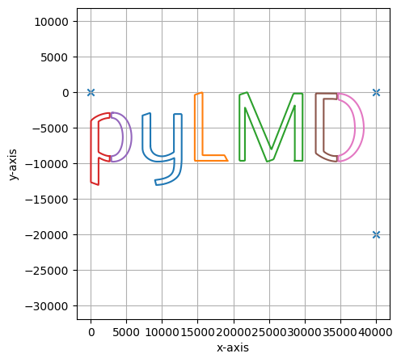

3.3. Convert SVG graphic into LMD excision instructions
[7]:
from lmd.lib import Collection, Shape
from sparcscore.processing.utils import flatten
import numpy as np
With a couple of lines of code we can easily convert a SVG file into cutting instructions for the LMD microscope.
[25]:
#define file path to simple SVG we want to excise
file_path = "../../_static/pyLMD_text.svg"
#define 3 times the same calibration point
calibration_points = [(0, 0), (40000, 0 ), (40000, - 20000)]
#initalize collection and add points for SVG
my_collection = Collection(calibration_points = calibration_points)
my_collection.svg_to_lmd(file_path)
[[Path(Move(end=Point(139.39,124.75)), CubicBezier(start=Point(139.39,124.75), control1=Point(139.39,141.5), control2=Point(151.39,150.25), end=Point(167.64,150)), CubicBezier(start=Point(167.64,150), control1=Point(177.39,149.75), control2=Point(188.39,144.25), end=Point(194.39,140.25)), Line(start=Point(194.39,140.25), end=Point(194.39,51)), Line(start=Point(194.39,51), end=Point(212.64,51)), Line(start=Point(212.64,51), end=Point(212.64,150.25)), CubicBezier(start=Point(212.64,150.25), control1=Point(212.64,163), control2=Point(211.89,182.25), end=Point(206.64,192.25)), CubicBezier(start=Point(206.64,192.25), control1=Point(197.39,209.75), control2=Point(171.39,216.75), end=Point(152.89,217.25)), Line(start=Point(152.89,217.25), end=Point(149.89,205.75)), CubicBezier(start=Point(149.89,205.75), control1=Point(163.89,203.75), control2=Point(183.89,201.75), end=Point(191.39,187.5)), CubicBezier(start=Point(191.39,187.5), control1=Point(195.14,180.5), control2=Point(195.39,166.75), end=Point(195.39,158.75)), CubicBezier(start=Point(195.39,158.75), control1=Point(195.39,156), control2=Point(195.64,156.75), end=Point(195.39,154)), CubicBezier(start=Point(195.39,154), control1=Point(189.89,156.5), control2=Point(177.64,162.5), end=Point(156.14,162.5)), CubicBezier(start=Point(156.14,162.5), control1=Point(139.64,162.5), control2=Point(120.89,150.75), end=Point(120.89,130.5)), Line(start=Point(120.89,130.5), end=Point(120.89,54.5)), Line(start=Point(120.89,54.5), end=Point(139.39,48.25)), Line(start=Point(139.39,48.25), end=Point(139.39,125)), Line(start=Point(139.39,125), end=Point(139.39,124.75)), Close(start=Point(139.39,124.75), end=Point(139.39,124.75)), fill='#231f20'), Path(Move(end=Point(319.64,160.5)), Line(start=Point(319.64,160.5), end=Point(243.14,160.5)), Line(start=Point(243.14,160.5), end=Point(243.14,6)), Line(start=Point(243.14,6), end=Point(261.39,0)), Line(start=Point(261.39,0), end=Point(261.39,147.5)), Line(start=Point(261.39,147.5), end=Point(312.89,147.5)), Line(start=Point(312.89,147.5), end=Point(319.64,160.5)), Close(start=Point(319.64,160.5), end=Point(319.64,160.5)), fill='#231f20'), Path(Move(end=Point(477.39,160.5)), Line(start=Point(477.39,160.5), end=Point(477.39,30.5)), Line(start=Point(477.39,30.5), end=Point(427.64,157.25)), Line(start=Point(427.64,157.25), end=Point(412.14,162.75)), Line(start=Point(412.14,162.75), end=Point(360.64,35)), Line(start=Point(360.64,35), end=Point(360.64,160.5)), Line(start=Point(360.64,160.5), end=Point(347.89,160.5)), Line(start=Point(347.89,160.5), end=Point(347.89,6)), Line(start=Point(347.89,6), end=Point(366.14,0)), Line(start=Point(366.14,0), end=Point(422.64,134.5)), Line(start=Point(422.64,134.5), end=Point(474.39,3)), Line(start=Point(474.39,3), end=Point(495.64,3)), Line(start=Point(495.64,3), end=Point(495.64,160.5)), Line(start=Point(495.64,160.5), end=Point(477.39,160.5)), Close(start=Point(477.39,160.5), end=Point(477.39,160.5)), fill='#231f20'), Path(Move(end=Point(44.18,149.62)), CubicBezier(start=Point(44.18,149.62), control1=Point(33.79,149.27), control2=Point(23.25,143.53), end=Point(17.75,140.09)), Line(start=Point(17.75,140.09), end=Point(17.75,68.84)), CubicBezier(start=Point(17.75,68.84), control1=Point(20.03,66.56), control2=Point(30.6,60.35), end=Point(44.18,60.01)), Line(start=Point(44.18,60.01), end=Point(44.18,48.17)), CubicBezier(start=Point(44.18,48.17), control1=Point(12.43,50.75), control2=Point(0.02,67.09), end=Point(0.25,67.09)), Line(start=Point(0.25,67.09), end=Point(0,210.84)), Line(start=Point(0,210.84), end=Point(18,217.34)), Line(start=Point(18,217.34), end=Point(18,152.59)), CubicBezier(start=Point(18,152.59), control1=Point(26.3,157.65), control2=Point(34.76,161.07), end=Point(44.18,162.19)), Line(start=Point(44.18,162.19), end=Point(44.18,149.62)), Close(start=Point(44.18,149.62), end=Point(44.18,149.62)), fill='#231f20'), Path(Move(end=Point(51.5,48.09)), Line(start=Point(51.5,48.09), end=Point(51.25,47.84)), CubicBezier(start=Point(51.25,47.84), control1=Point(50.1,47.86), control2=Point(48.98,47.89), end=Point(47.88,47.94)), Line(start=Point(47.88,47.94), end=Point(47.88,60.07)), CubicBezier(start=Point(47.88,60.07), control1=Point(83,59.13), control2=Point(84.45,149.82), end=Point(47.88,149.51)), Line(start=Point(47.88,149.51), end=Point(47.88,162.5)), CubicBezier(start=Point(47.88,162.5), control1=Point(110.98,166.83), control2=Point(109.55,46.33), end=Point(51.5,48.09)), Close(start=Point(51.5,48.09), end=Point(51.5,48.09)), fill='#231f20'), Path(Move(end=Point(576.18,149.3)), CubicBezier(start=Point(576.18,149.3), control1=Point(574.94,149.42), control2=Point(573.68,149.5), end=Point(572.39,149.5)), CubicBezier(start=Point(572.39,149.5), control1=Point(561.89,149.5), control2=Point(550.89,144), end=Point(544.89,138.5)), Line(start=Point(544.89,138.5), end=Point(544.89,15.5)), Line(start=Point(544.89,15.5), end=Point(564.64,15.5)), CubicBezier(start=Point(564.64,15.5), control1=Point(568.79,15.59), control2=Point(572.63,16), end=Point(576.18,16.67)), Line(start=Point(576.18,16.67), end=Point(576.18,3)), Line(start=Point(576.18,3), end=Point(526.39,2.75)), Line(start=Point(526.39,2.75), end=Point(526.39,142.75)), CubicBezier(start=Point(526.39,142.75), control1=Point(537.14,151.5), control2=Point(556.14,162.25), end=Point(576.14,162.25)), CubicBezier(start=Point(576.14,162.25), control1=Point(576.15,162.25), control2=Point(576.17,162.25), end=Point(576.18,162.25)), Line(start=Point(576.18,162.25), end=Point(576.18,149.3)), Close(start=Point(576.18,149.3), end=Point(576.18,149.3)), fill='#231f20'), Path(Move(end=Point(579.37,3.05)), Line(start=Point(579.37,3.05), end=Point(579.37,17.38)), CubicBezier(start=Point(579.37,17.38), control1=Point(610.83,25.23), control2=Point(618.14,56.22), end=Point(618.14,86.25)), CubicBezier(start=Point(618.14,86.25), control1=Point(618.14,112.75), control2=Point(605.6,144.1), end=Point(579.37,148.86)), Line(start=Point(579.37,148.86), end=Point(579.37,162.15)), CubicBezier(start=Point(579.37,162.15), control1=Point(615.76,160.01), control2=Point(638.89,121.9), end=Point(638.89,84.25)), CubicBezier(start=Point(638.89,84.25), control1=Point(638.89,46.6), control2=Point(620.86,4.64), end=Point(579.37,3.05)), Close(start=Point(579.37,3.05), end=Point(579.37,3.05)), fill='#231f20')], Path(Move(end=Point(139.39,124.75)), CubicBezier(start=Point(139.39,124.75), control1=Point(139.39,141.5), control2=Point(151.39,150.25), end=Point(167.64,150)), CubicBezier(start=Point(167.64,150), control1=Point(177.39,149.75), control2=Point(188.39,144.25), end=Point(194.39,140.25)), Line(start=Point(194.39,140.25), end=Point(194.39,51)), Line(start=Point(194.39,51), end=Point(212.64,51)), Line(start=Point(212.64,51), end=Point(212.64,150.25)), CubicBezier(start=Point(212.64,150.25), control1=Point(212.64,163), control2=Point(211.89,182.25), end=Point(206.64,192.25)), CubicBezier(start=Point(206.64,192.25), control1=Point(197.39,209.75), control2=Point(171.39,216.75), end=Point(152.89,217.25)), Line(start=Point(152.89,217.25), end=Point(149.89,205.75)), CubicBezier(start=Point(149.89,205.75), control1=Point(163.89,203.75), control2=Point(183.89,201.75), end=Point(191.39,187.5)), CubicBezier(start=Point(191.39,187.5), control1=Point(195.14,180.5), control2=Point(195.39,166.75), end=Point(195.39,158.75)), CubicBezier(start=Point(195.39,158.75), control1=Point(195.39,156), control2=Point(195.64,156.75), end=Point(195.39,154)), CubicBezier(start=Point(195.39,154), control1=Point(189.89,156.5), control2=Point(177.64,162.5), end=Point(156.14,162.5)), CubicBezier(start=Point(156.14,162.5), control1=Point(139.64,162.5), control2=Point(120.89,150.75), end=Point(120.89,130.5)), Line(start=Point(120.89,130.5), end=Point(120.89,54.5)), Line(start=Point(120.89,54.5), end=Point(139.39,48.25)), Line(start=Point(139.39,48.25), end=Point(139.39,125)), Line(start=Point(139.39,125), end=Point(139.39,124.75)), Close(start=Point(139.39,124.75), end=Point(139.39,124.75)), fill='#231f20'), Path(Move(end=Point(319.64,160.5)), Line(start=Point(319.64,160.5), end=Point(243.14,160.5)), Line(start=Point(243.14,160.5), end=Point(243.14,6)), Line(start=Point(243.14,6), end=Point(261.39,0)), Line(start=Point(261.39,0), end=Point(261.39,147.5)), Line(start=Point(261.39,147.5), end=Point(312.89,147.5)), Line(start=Point(312.89,147.5), end=Point(319.64,160.5)), Close(start=Point(319.64,160.5), end=Point(319.64,160.5)), fill='#231f20'), Path(Move(end=Point(477.39,160.5)), Line(start=Point(477.39,160.5), end=Point(477.39,30.5)), Line(start=Point(477.39,30.5), end=Point(427.64,157.25)), Line(start=Point(427.64,157.25), end=Point(412.14,162.75)), Line(start=Point(412.14,162.75), end=Point(360.64,35)), Line(start=Point(360.64,35), end=Point(360.64,160.5)), Line(start=Point(360.64,160.5), end=Point(347.89,160.5)), Line(start=Point(347.89,160.5), end=Point(347.89,6)), Line(start=Point(347.89,6), end=Point(366.14,0)), Line(start=Point(366.14,0), end=Point(422.64,134.5)), Line(start=Point(422.64,134.5), end=Point(474.39,3)), Line(start=Point(474.39,3), end=Point(495.64,3)), Line(start=Point(495.64,3), end=Point(495.64,160.5)), Line(start=Point(495.64,160.5), end=Point(477.39,160.5)), Close(start=Point(477.39,160.5), end=Point(477.39,160.5)), fill='#231f20'), Path(Move(end=Point(44.18,149.62)), CubicBezier(start=Point(44.18,149.62), control1=Point(33.79,149.27), control2=Point(23.25,143.53), end=Point(17.75,140.09)), Line(start=Point(17.75,140.09), end=Point(17.75,68.84)), CubicBezier(start=Point(17.75,68.84), control1=Point(20.03,66.56), control2=Point(30.6,60.35), end=Point(44.18,60.01)), Line(start=Point(44.18,60.01), end=Point(44.18,48.17)), CubicBezier(start=Point(44.18,48.17), control1=Point(12.43,50.75), control2=Point(0.02,67.09), end=Point(0.25,67.09)), Line(start=Point(0.25,67.09), end=Point(0,210.84)), Line(start=Point(0,210.84), end=Point(18,217.34)), Line(start=Point(18,217.34), end=Point(18,152.59)), CubicBezier(start=Point(18,152.59), control1=Point(26.3,157.65), control2=Point(34.76,161.07), end=Point(44.18,162.19)), Line(start=Point(44.18,162.19), end=Point(44.18,149.62)), Close(start=Point(44.18,149.62), end=Point(44.18,149.62)), fill='#231f20'), Path(Move(end=Point(51.5,48.09)), Line(start=Point(51.5,48.09), end=Point(51.25,47.84)), CubicBezier(start=Point(51.25,47.84), control1=Point(50.1,47.86), control2=Point(48.98,47.89), end=Point(47.88,47.94)), Line(start=Point(47.88,47.94), end=Point(47.88,60.07)), CubicBezier(start=Point(47.88,60.07), control1=Point(83,59.13), control2=Point(84.45,149.82), end=Point(47.88,149.51)), Line(start=Point(47.88,149.51), end=Point(47.88,162.5)), CubicBezier(start=Point(47.88,162.5), control1=Point(110.98,166.83), control2=Point(109.55,46.33), end=Point(51.5,48.09)), Close(start=Point(51.5,48.09), end=Point(51.5,48.09)), fill='#231f20'), Path(Move(end=Point(576.18,149.3)), CubicBezier(start=Point(576.18,149.3), control1=Point(574.94,149.42), control2=Point(573.68,149.5), end=Point(572.39,149.5)), CubicBezier(start=Point(572.39,149.5), control1=Point(561.89,149.5), control2=Point(550.89,144), end=Point(544.89,138.5)), Line(start=Point(544.89,138.5), end=Point(544.89,15.5)), Line(start=Point(544.89,15.5), end=Point(564.64,15.5)), CubicBezier(start=Point(564.64,15.5), control1=Point(568.79,15.59), control2=Point(572.63,16), end=Point(576.18,16.67)), Line(start=Point(576.18,16.67), end=Point(576.18,3)), Line(start=Point(576.18,3), end=Point(526.39,2.75)), Line(start=Point(526.39,2.75), end=Point(526.39,142.75)), CubicBezier(start=Point(526.39,142.75), control1=Point(537.14,151.5), control2=Point(556.14,162.25), end=Point(576.14,162.25)), CubicBezier(start=Point(576.14,162.25), control1=Point(576.15,162.25), control2=Point(576.17,162.25), end=Point(576.18,162.25)), Line(start=Point(576.18,162.25), end=Point(576.18,149.3)), Close(start=Point(576.18,149.3), end=Point(576.18,149.3)), fill='#231f20'), Path(Move(end=Point(579.37,3.05)), Line(start=Point(579.37,3.05), end=Point(579.37,17.38)), CubicBezier(start=Point(579.37,17.38), control1=Point(610.83,25.23), control2=Point(618.14,56.22), end=Point(618.14,86.25)), CubicBezier(start=Point(618.14,86.25), control1=Point(618.14,112.75), control2=Point(605.6,144.1), end=Point(579.37,148.86)), Line(start=Point(579.37,148.86), end=Point(579.37,162.15)), CubicBezier(start=Point(579.37,162.15), control1=Point(615.76,160.01), control2=Point(638.89,121.9), end=Point(638.89,84.25)), CubicBezier(start=Point(638.89,84.25), control1=Point(638.89,46.6), control2=Point(620.86,4.64), end=Point(579.37,3.05)), Close(start=Point(579.37,3.05), end=Point(579.37,3.05)), fill='#231f20')]
3.3.1. Visualize Results
[26]:
my_collection.plot()

3.3.2. Export to XML
[27]:
#save results to XML
my_collection.save("pyLMD_xml_excision.xml")
[0. 0.]
[4000000. 0.]
[ 4000000. -2000000.]